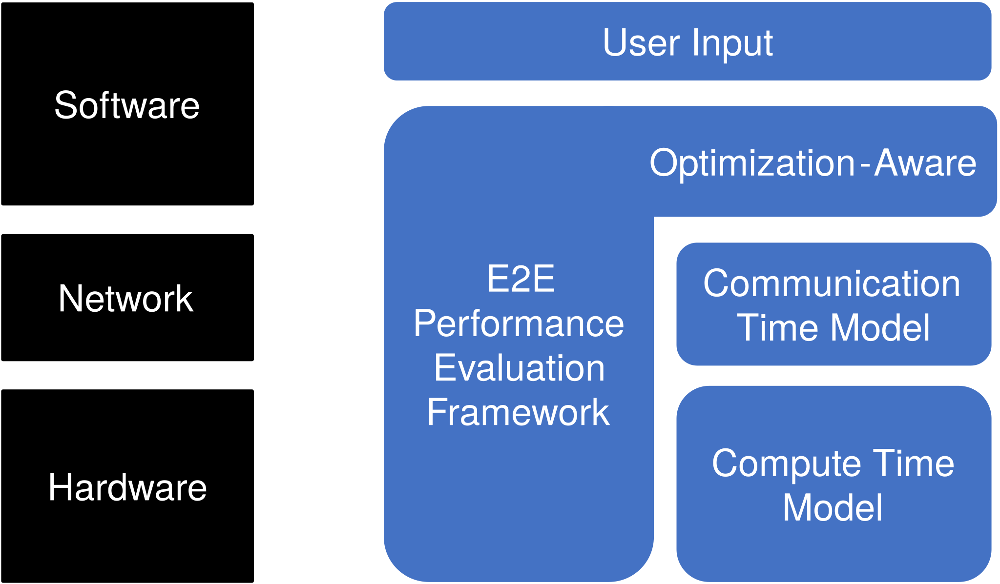
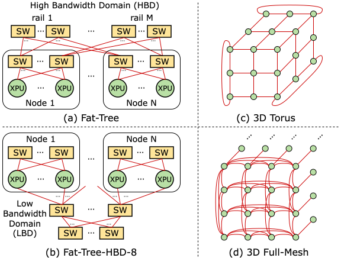
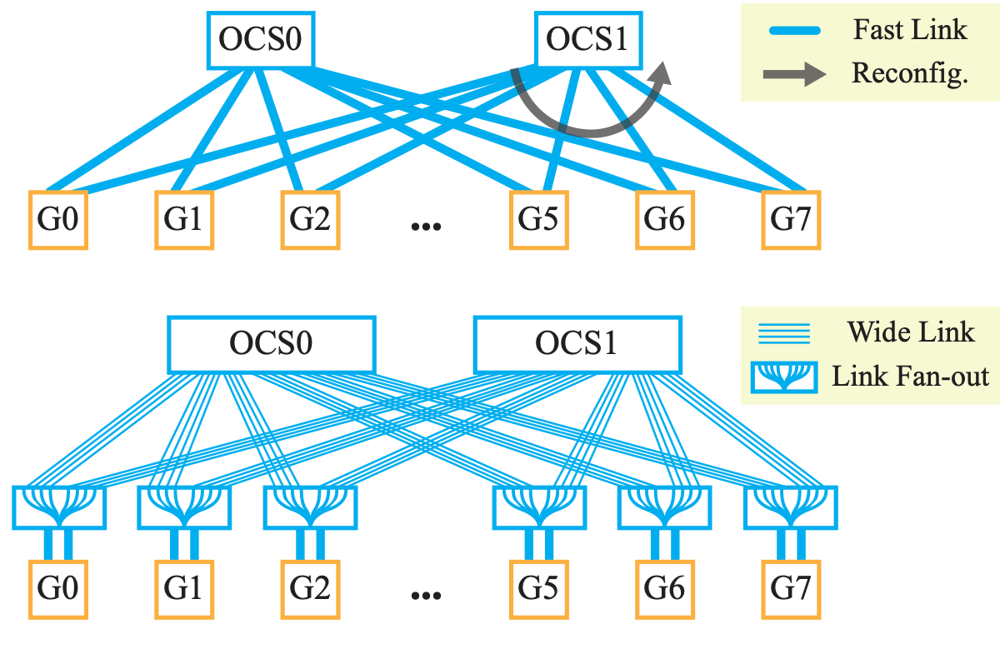
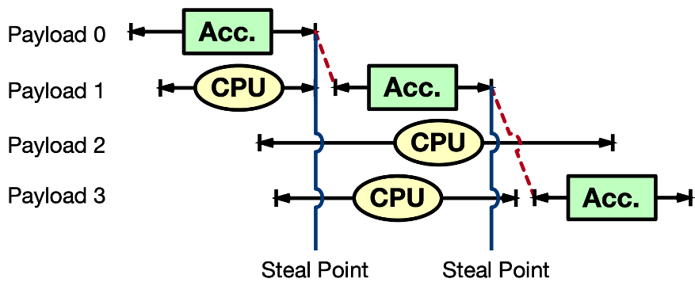
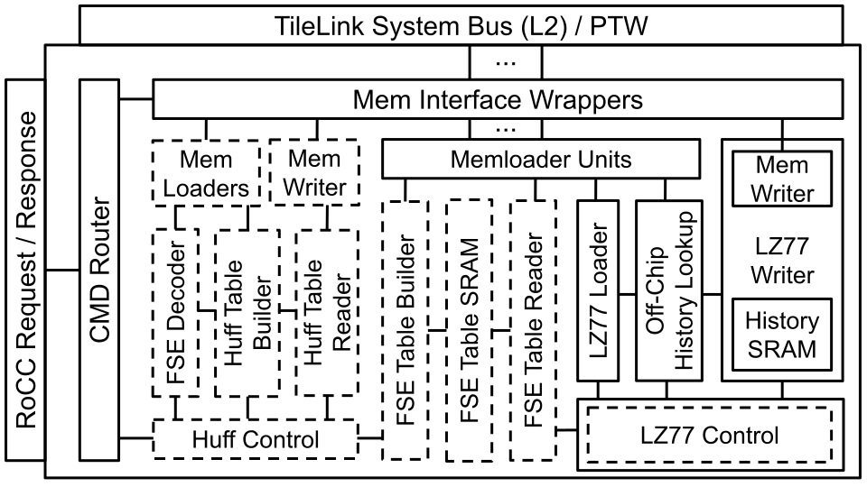

Developing a multi-fidelity, area-aware, energy-aware hardware performance evaluation framework for a network-hardware co-design of AI data centers.
I am a Ph.D. candidate at UC Berkeley's EECS department. I am a part of the Berkeley Architecture Research group in the SLICE lab, co-advised by Professor Borivoje Nikolić and Professor Yakun Sophia Shao. I also worked closely with Professor Sagar Karandikar on the hyperscale SoC project.
My goal as an engineer is to design the next-generation hyperscale systems that can impact people's lives. My research focuses on data center system design, in the intersection of SoC microarchitecture and network.
Prior to Berkeley, I received my B.S. in Electrical and Computer Engineering from Seoul National University.
My work explores how hardware and networks shape the design of hyperscale systems.

Developing a multi-fidelity, area-aware, energy-aware hardware performance evaluation framework for a network-hardware co-design of AI data centers.

How should we connect accelerators to serve mixture-of-experts language models? This project examines network topologies through both token throughput and throughput per cost.
My research looks at the interaction between communication, hardware resources, and datacenter system design.
arXiv · 2026
Optical circuit switching offers a different way to connect datacenter resources. This work studies the performance thresholds that matter when applying it to LLM inference.
OFC · 2026In Collaboration with Google

This project studies remote procedure call accelerator scheduling for hyperscale workloads.
Related publication
System-level operations such as compression and decompression are a key part of datacenter workloads. My work on CDPU explores co-designed processing units for these operations.
ISCA · 2023 · Master’s thesis
Remote Procedure Call Accelerator Scheduling for
Hyperscale Workloads
arXiv Preprint, 2026 (To Appear)
Rethinking Network Topologies for Cost-Effective Mixture-of-Experts LLM Serving (link)
Junsun Choi, Sam Son, Sunjin Choi, Hansung Kim, Yakun Sophia Shao, Scott Shenker, Sylvia Ratnasamy, and Borivoje Nikolić
arXiv Preprint, 2026
Performance Thresholds for Optical Circuit Switching in LLM Inference (link)
Junsun Choi, Sunjin Choi, Sam Son, Vladimir Stojanovic, Yakun Sophia Shao, and Borivoje Nikolić
In Proceedings of the 2026 Optical Fiber Communications Conference and Exhibition (OFC 2026)
A Hardware Accelerator Generator for Zstandard Decompression (link)
Junsun Choi
Master's Thesis, 2024
CDPU: Co-designing Compression and Decompression Processing Units for Hyperscale Systems (link)
Sagar Karandikar, Aniruddha N. Udipi, Junsun Choi, Joonho Whangbo, Jerry Zhao, Svilen Kanev, Edwin Lim, Jyrki Alakuijala, Vrishab Madduri, Yakun Sophia Shao, Borivoje Nikolic, Krste Asanovic, Parthasarathy Ranganathan
In Proceedings of the 50th ACM/IEEE International Symposium on Computer Architecture (ISCA 2023)